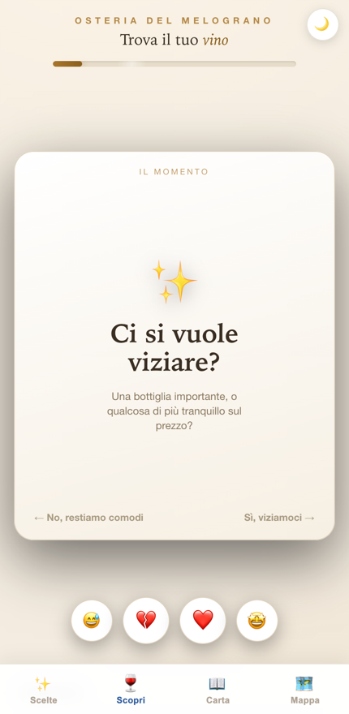

Per il cliente
Non sa che vino scegliere? Ci pensa l'app.
Risponde a due domande — niente etichette, niente imbarazzo — e arriva al vino giusto per il suo momento.
Per te: vendi anche ai tavoli dove nessuno fa da sommelier, e accompagni verso l'alto lo scontrino.